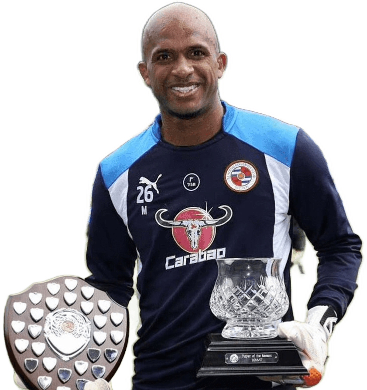

٢٩ أبريل ٢٠١٧
أفضل لاعب في ريدينغ لموسمين متتاليين
فاز بجائزة أفضل لاعب في ريدينغ لموسمي ٢٠١٥–٢٠١٦ و٢٠١٦–٢٠١٧، ليحصل على تقدير النادي في موسمين متتاليين.
اقرأ المزيد
Ali Al-Habsi
حارس المنتخب الوطني سابقًا
محترف في الدوري الإنجليزي
بطل كأس الخليج ١٩

قبل أن يصبح اسمه مألوفًا في ملاعب إنجلترا، كان علي الحبسي يعمل رجل إطفاء في مطار مسقط. وبين تلك البداية وملاعب الاحتراف، امتدت رحلة حملته من المضيبي إلى النصر، ثم إلى النرويج وإنجلترا، ومعه حلم أخذ يتسع كلما عبر محطة جديدة. في مركز الحراسة، يواجه اللاعب لحظات ينكشف فيها الملعب أمامه كله، وتصبح حركة واحدة قادرة على تغيير النتيجة. بنى الحبسي مكانته في هذا الاختبار المتكرر، حتى نال تقديرًا لأدائه في النرويج، ثم واصل مسيرته مع أندية إنجليزية، وكان ضمن فريق ويغان المتوّج بكأس الاتحاد الإنجليزي. وبقيت مسقط تحمل فصلًا قريبًا من القلوب: تتويج المنتخب العُماني بكأس الخليج التاسعة عشرة أمام جماهيره. اجتمع في تلك الليلة فرح الحارس بفرح وطن كامل، وصارت البطولة جزءًا من الذاكرة الرياضية العُمانية. لاحقًا، وجدت مقتنياته مكانًا في المتحف الوطني. القميص والميدالية يرويان للزائر نهاية فصل، لكن حكايته تبدأ قبل ذلك بكثير؛ من شاب يعمل في المطار، ثم يمضي إلى عالم كانت ملاعبه بعيدة، حتى يصبح أحد وجوهها المعروفة.

أبرز محطاترحلتي في الملاعب
٢٩ أبريل ٢٠١٧
فاز بجائزة أفضل لاعب في ريدينغ لموسمي ٢٠١٥–٢٠١٦ و٢٠١٦–٢٠١٧، ليحصل على تقدير النادي في موسمين متتاليين.
اقرأ المزيد
٢٤ أبريل ٢٠٢٤
دشّن المتحف الوطني ركنًا لمقتنياته يضم ميدالية كأس الاتحاد الإنجليزي وقميص نهائي ويمبلي.
اقرأ المزيد
٣١ أغسطس ٢٠٢٠
كرّمه محافظ شمال الشرقية بعد إعلانه الاعتزال، تقديرًا لمسيرته محليًا ودوليًا مع المنتخب والأندية.
اقرأ المزيد
٢٤ أغسطس ٢٠٢٠
كرّمته اللجنة الأولمبية العُمانية بمناسبة انتهاء مسيرته لاعبًا، شكرًا على تمثيله المنتخب والأندية.
اقرأ المزيد
ديسمبر ٢٠١٦
اختير ضمن قائمة أفضل حراس المرمى في آسيا، تقديرًا لمسيرته في الدوري الإنجليزي ومع المنتخب الوطني.
اقرأ المزيد
١١ مايو ٢٠١٣
تُوّج مع ويغان بكأس الاتحاد الإنجليزي بعد الفوز على مانشستر سيتي ١–٠ في ويمبلي، أول لقب كبير في تاريخ النادي.
اقرأ المزيد
٢٠١٠
اختاره الجمهور أفضل لاعب في ويغان خلال موسم إعارته من بولتون، قبل انضمامه إلى النادي نهائيًا.
اقرأ المزيد
١٧ يناير ٢٠٠٩
أحرز مع المنتخب أول لقب خليجي في تاريخه على أرض مسقط، ونال جائزة أفضل حارس في البطولة.
اقرأ المزيد
٢٠٠٨
منحه السلطان قابوس بن سعيد وسام عُمان المدني تقديرًا لتميّزه في المجال الرياضي.
اقرأ المزيد
نوفمبر ٢٠٠٤
فاز بلقب حارس الموسم في النرويج لعام ٢٠٠٤ مع نادي لين، متقدّمًا على حارسي روزنبرغ وفاليرينغا.
اقرأ المزيد
٢٠٠٢
أحرز كأس السلطان قابوس مع النصر بعد الفوز على ظفار ٢–١ في النهائي، قبل احترافه الأوروبي.
اقرأ المزيدلا توجد إنجازات في هذا التصنيف.
«تعرف أنك تستطيع الاعتماد على علي.»
«يواصل الأداء بهذا المستوى، ولم يعد ذلك يفاجئنا.»
«جميعنا سعداء بوجود علي معنا، وسنحاول إبقاءه هنا أطول مدة ممكنة.»
الأقوال مترجمة عن تصريحات منشورة بالإنجليزية.
بعد أعوام تشرفت فيها بتمثيل عدد من الأندية داخل الوطن وخارجه، أعلن اليوم إنهاء مسيرتي كلاعب كرة قدم.